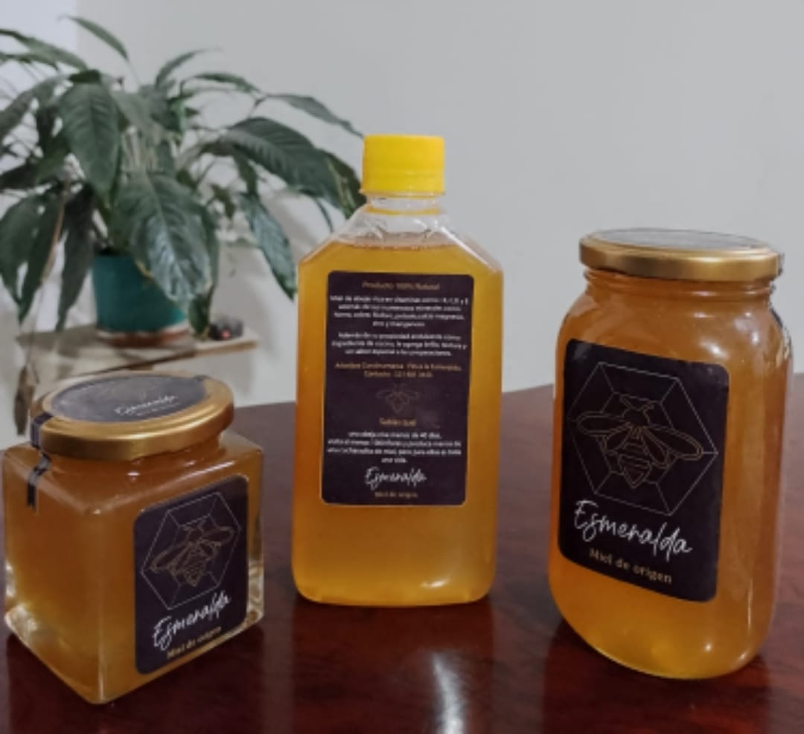
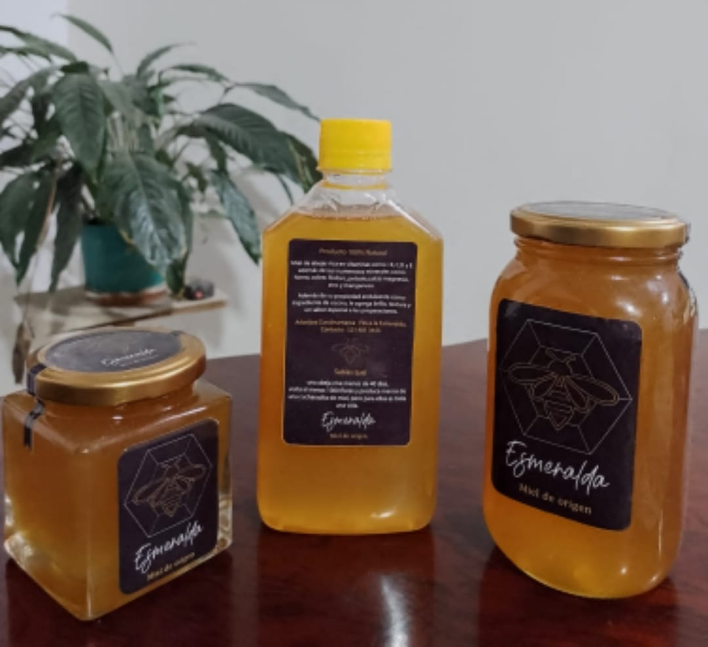

En el corazón de la naturaleza, nace ESMERALDA MIEL DE ORIGEN, una empresa apasionada por la apiterapia sostenible y el fomento de experiencias transformadoras, Con un enfoque apasionado hacia la conexión entre las personas y las bondades de las abejas, este propósito va más allá de ofrecer productos con el propósito de educar , inspirar y preservar ESMERALDA MIEL DE ORIGEN es mucho más que un producto, a través de cautivadoras sesiones, sumergimos a los participantes en el fascinante mundo de la apicultura y las terapias apícolas. Desde visitas a colmenas hasta la organización de talleres interactivos, proporcionando conocimientos profundos sobre los beneficios terapéuticos de los productos apícolas y fomentando la conservación del medio ambiente
Producción de Miel Orgánica de Alta Calidad:
Compromiso con la producción de miel orgánica de la más alta calidad, respaldada por estándares
rigurosos de control de calidad.
Compromiso con la Sostenibilidad:
Prácticas apícolas sostenibles y respetuosas con el medio ambiente, contribuyendo a la conservación de
las abejas y la biodiversidad.
Promover prácticas sostenibles en todos los aspectos de la empresa Esmeralda Miel de Origen, desde la producción de miel hasta las operaciones de apiterapias, para preservar y proteger nuestro entorno natural.
Excelencia en la calidad de los productos y servicios desde la miel orgánica hasta las actividades de apiterapia, para así mantener los más altos estándares para garantizar la satisfacción y la confianza de nuestros clientes.
Nos apasiona la naturaleza y creemos en compartir esa pasión con los demás. Inspiramos a las personas a reconectar con el mundo natural y a apreciar la belleza y la importancia de nuestro entorno.
Nos esforzamos por la innovación continua en nuestros métodos de apicultura, nuestras ofertas de apiterapia y nuestra educación ambiental.
 

Para más información o para realizar pedidos, por favor contáctanos: